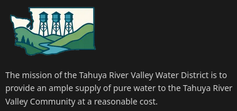
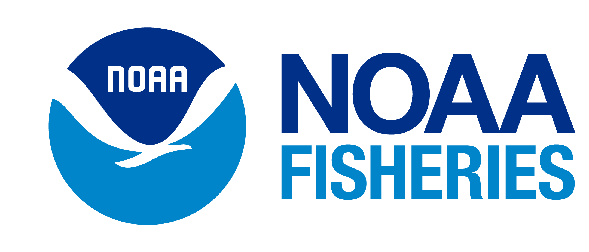

Full Stack Software Engineer | MERN Stack Specialist
Full-stack software engineer specializing in the MERN stack (MongoDB, Express, React, Node.js). Creating user-friendly, accessible web solutions and efficient applications.
Passionate developer with a love for clean code and innovative solutions.
I'm a full-stack software engineer, based in the Greater Seattle Area, specializing in the MERN stack (MongoDB, Express, React, Node.js). I have a passion for building efficient, user-friendly web applications that solve real-world problems and provide exceptional user experiences.
My expertise lies in JavaScript and its ecosystem, from creating dynamic React frontends to building robust Node.js backends. However, I also enjoy exploring other technologies and have worked with R, Shiny, and various SQL and NoSQL databases.
When I'm not coding, you can find me trying out new recipes, building out my smart home tech, or discovering/designing new things I "need" to 3D print.
The tools and technologies I use to bring ideas to life.
Some of the projects I've worked on recently.

Sole developer for a local water district's website using the Next.js framework. Features include mobile-friendly design, dynamic meeting date updates, dark and light mode, and accessibility compliance.

Collaborate with a team of NOAA developers and scientists to develop and maintain an external web application for managing and accessing research documents detailing pacific salmonid stressors and responses. Built with R/Shiny for the frontend and PostgreSQL for the backend.
A web application that allows users to search for, view, and save recipes. The application also supports searching for a recipe by name or filtering recipes by multiple criteria.Anyone not logged in can: search for recipes using multiple criteria, create an account, or log in. Logged in users can perform all of the above plus: save recipes for future reference and view saved recipes on their profile page.
Let's work together.